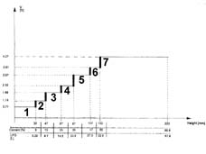
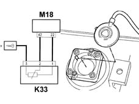

1043AD Check operation of LPG level sensor
- Path
- Test > 10 ENGINE UNIT > 1043 LGP TANK AND PIPES > 1043A gpl tank > 1043AD Check operation of LPG level sensor
- Kind
- test / check procedure
- Applies to
- engines: 1.6 16v; all production periods; only with equipment: GPOWER
- Interactive page
- https://sloeber94.github.io/elrnDB-fMltpl/en/#/2892372
Applies to: engines: 1.6 16v; all production periods; only with equipment: GPOWER
Check the characteristic curve of the gauge, by measuring the voltage between pins 1 and 2, in relation to the LPG level as shown in the following graph.
Amber LED on (1).
First green LED on (2).
Two green LEDs on (3).
Three green LEDs on (4).
Four green LEDS on (5).
Five green LEDs on (6).
Six green LEDs on (7).

Sensor connections.
Digital earth (1).
Output voltage (signal) (2).
12V supply (3).
